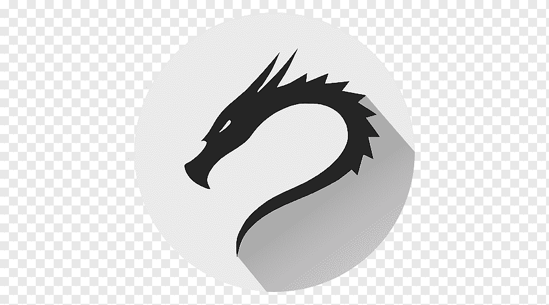

Hyperblog
Tu blog de cabecera german
Este es el título atractivo e interesante del post
<<<<<<< HEADY este es el parrafo de inicio donde vamos a explicar las cosas increeibles que se pueden hacer con ramas

Y este es el párrafo de inicio donde vamos a explicar las cosas increíbles que se pueden hacer con ramas
>>>>>>> 564711a8aeaf38e79e9502ee53a4f5a0769a42f9Los blogs son la mejor forma de compartir información y tus ideas. Mucho mas que ir a conferencias o salir en Youtube. Excepto si eres un rockstar. Pero estadísticamente no lo eres... por ahora.
Suscribete y dale like